4日目～BeautifulMenoWall～
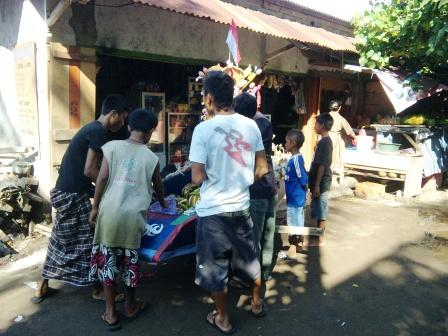
昨晩はしっかりと電気が供給され、熟睡することができた。宿はメインストリートから300mほど入ったところにある。朝飯を食おうとメインストリートに向かうと、道端でバナナを売っていた。あたりには子供がたくさん。
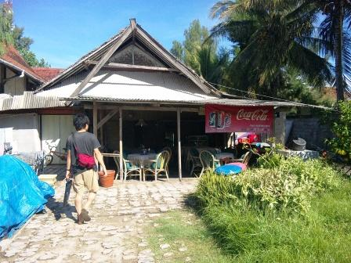
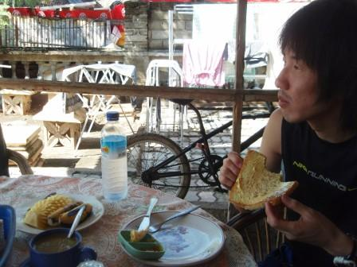
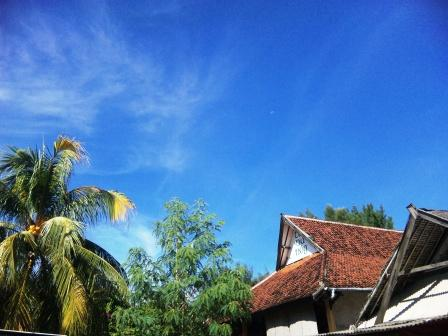
営業しているのかが微妙な食堂を見つけ、表に出ていたメニューを見ると価格も手ごろなので入ってみることにした。庭があったり、見た目もあまり商売っ気がないが、パンとコーヒーにフルーツカクテルのモーニングはちょうどよかった。そして天気は最高。きれいな青空だった。
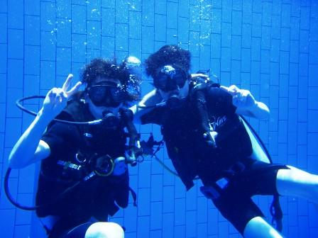
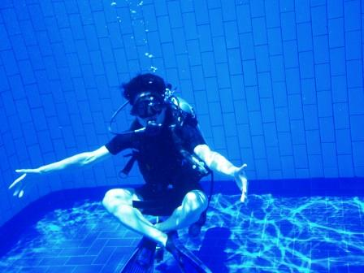
今日の午前は再びプールダイブ。浮力のコントロール、マスク、レギュレーターが取れた時の対処法など、様々な基本テクニックを練習した。僕たちの持っていたデジカメは当然水にぬらしてはいけないが、インストラクターが防水ケースに入れたカメラで写真をとってくれた。以前、スノーケルで海に潜ったことがあるが、水が入ってきたりと随分使い勝手が悪かった覚えがある。しかし、レギュレーターを通しての呼吸は予想以上に楽で、あまり海水を飲んでしまうこともなかった。
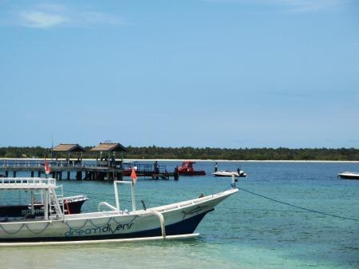
波は穏やか。午後は再び海洋実習だ。ボートで向かう行先は、メノウォール。
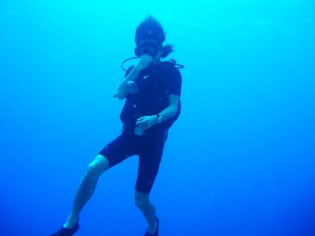
合図とともに海へ。耳抜きがうまくできないととても耳が痛い。今日は山部が不調。思いっきり力まないと耳抜きができなかった。一方、大井はコツをつかんだのか、鼻をつままなくても耳抜きができるようになった。
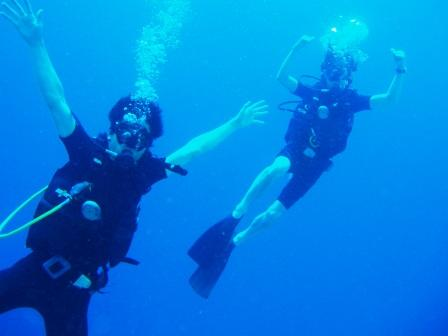
徐々に深度を下げていく。無重力に近い感覚が心地よい。陸上では重いタンクがずっしりと肩にのしかかるが、水中ではまったく重さを感じない。しょっていることを忘れてしまうほどだ。
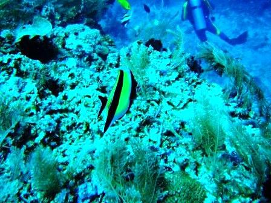
海底には、巨大な壁があった。これがメノウォールだ。サンゴ礁で作られたようなこの壁は、無数の魚たちのすみかにもなっているようだ。魚に詳しくはないのでどの魚がなんという名なのかは全く分からなかったものの、相当多くの種類の魚たちが住んでいるとは分かった。この写真は、インストラクターに水中使用カメラを借りて撮ったものである。
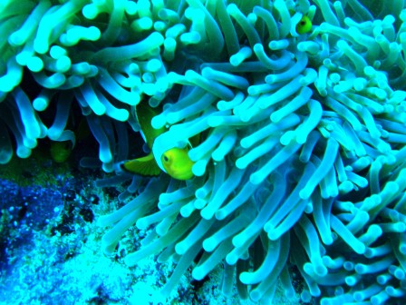
これはお馴染みのニモである。本当にイソギンチャクでかくれんぼをしていた。このような、管のような特定のイソギンチャクを好むようだ。決してここから出ようとしない。
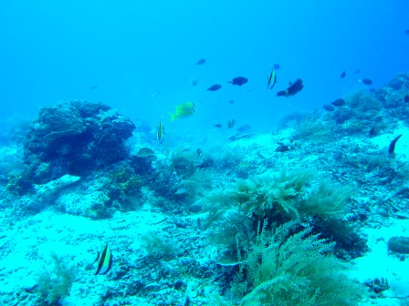
見入ってしまうほどの美しい魚たち。熱帯魚ショップでも見たことのあるような魚たちが、こんなにも悠々と広い海の中を泳いでいたなんて。
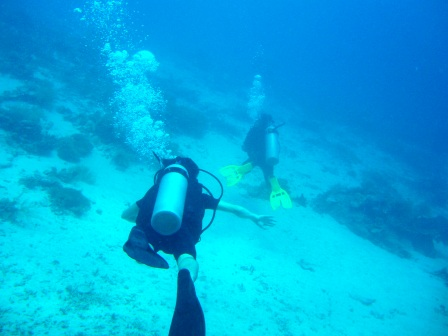
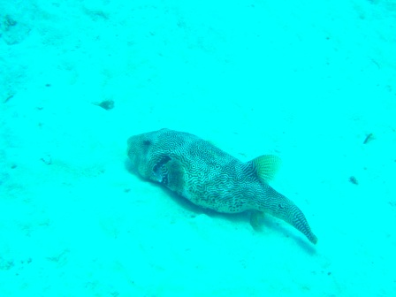
フグを発見！元気がないのか、もともとこういう魚なのか、海底でじっとしていた。めんたまが青いのが特徴的。
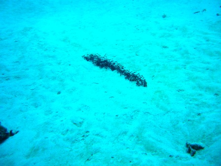
海底で黒いモヤのようなものを見つけ、近寄ってみると小さな魚たちの集合であることが分かった。動いているところを遠くから見ると、さながら大きな魚が泳いでいるように見える。こうして外敵から身を守っているのかもしれない。ゼブラフィッシュという名前らしい。
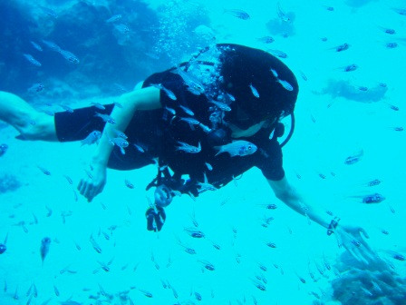
小魚が近寄ってきた。透明な魚で、骨まで丸見えだった。
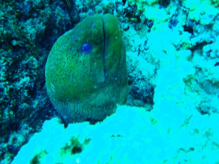
ウツボにも遭遇！！歯がとてもするどく、手を出したら噛まれてしまいそうだ。コイツも目が青い。
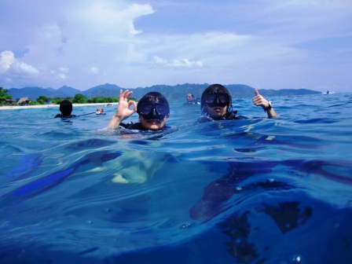
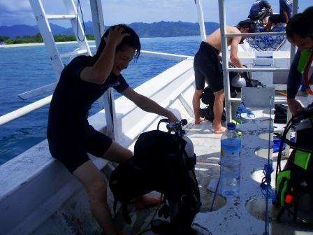
約40分間の潜水を終え、水面に浮上。
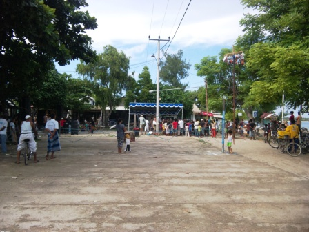
大満足のいくダイビングを終え、宿に戻ろうとすると、広場でなにかの準備をしていた。格闘技のリングのようにも見える。
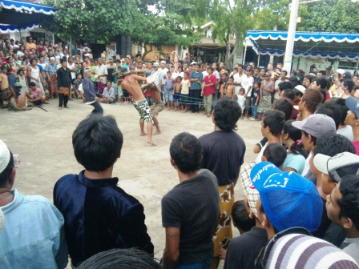
着替えを済ませてこの広場に戻ってくると、盾と棒を持って殴りあうという格闘技をしていた。今日はお祭りの日のようだ。しかし、この競技審判の合図とともに間合いを詰め、あとはひたすら相手を棒で打ちつけるというものなのだが、どうなったら勝敗が決まるのかがよくわからなかった。殴りあいがヒートアップするとすぐに試合は終了しているようだった。だいたい一試合1分弱で終わっていたのではないだろうか。面白いのが、対戦カードの決め方である。集落対抗のような感じで、各コーナーにそれぞれチームが陣取っており、お互いに次はお前が出てこい！俺が相手だ！といった雰囲気で挑発しあい、やったろやないかという感じでカードが決まる。
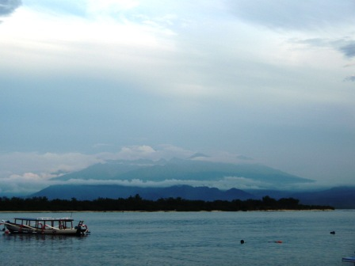
少し曇っているものの、遠くにはロンボク本島のリンジャニ山を望むことができた。ガイド付きの3泊登山で1万円強で登れるらしく、かなり興味をそそられたが、時間の都合で断念せざるを得なかった。山頂付近には氷河をたたえ、パプアのジャヤ峰、スマトラのクリンチ山に次ぐ、インドネシア第三の高峰である。標高は富士山と同程度。
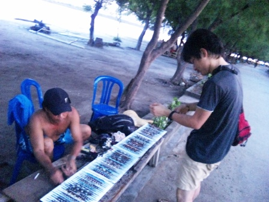
散歩中にブレスレットを購入。値切りはインドネシア共通のキーワード。値切っても、相手はたいてい嫌な顔一つしない。むしろ、楽しそうである。
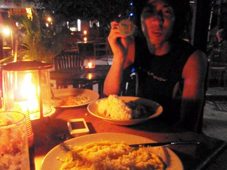
日も暮れてきたので、レストランへ。この日はオムレツとカレーライスを注文。カレーもそこまで辛くなく、完全にヨーロピアンテイストとなっている。
翌日へ